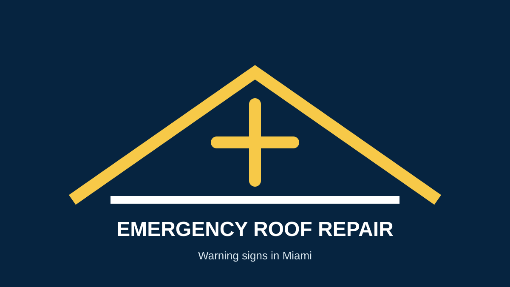

Urgent Signs You Need Emergency Roof Repair in Miami
Some roofing problems should not wait for a routine appointment. If you are searching for emergency roof repair in Miami, look for conditions that can quickly cause additional property damage or create a safety concern.
Signs that need prompt attention
- Active water intrusion: water is entering the home during or after rain.
- Major storm damage: large areas of roofing material are missing, displaced or punctured.
- Exposed roof areas: underlayment, decking or interior layers are visibly exposed.
- Structural warning signs: sagging ceilings or roof areas may indicate a serious problem.
- Large openings or impact damage: debris or other impacts have created a hole or significant breach.
- Rapidly worsening damage: a leak or defect is spreading and causing new interior damage.
What should you do?
Move people and valuables away from unsafe areas, contain interior water when safe, document visible damage and arrange professional help. Do not climb onto a damaged or unstable roof.
For service, see Hyper Roof emergency roofing or Miami roof repair.
Emergency repair vs. replacement
An emergency response can stabilize a property, but the final scope depends on the roof condition. Some storm damage is repairable; widespread damage or an aging system may require replacement.
How to avoid storm-chaser problems
After major storms, homeowners may receive unsolicited offers for immediate roof work. Ask for clear written scope, verify licensing where applicable, confirm insurance and avoid paying large amounts before understanding the work and contract.
Frequently asked questions
Is every roof leak an emergency?
An active leak deserves prompt attention, especially when water is entering living areas or electrical spaces. The severity and cause determine the appropriate response.
Can I tarp my roof myself?
Roof access can be dangerous, especially after a storm. If temporary protection is needed, use a qualified professional when possible.
What should I do if the ceiling is sagging?
Keep people away from the area and treat it as a potential safety issue. Do not stand beneath or disturb a visibly unstable ceiling.
Request Emergency Roof Help →Sources and further reading
- FEMA — Disaster preparedness and recovery
- Ready.gov — Emergency preparedness
- NOAA — Hurricane preparedness
- National Roofing Contractors Association
Related guides
What to do when your roof leaks · Hurricane roof damage · Storm damage roof repair